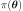
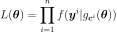

MetropolisHastings¶
- class MetropolisHastings(*args)¶
Base class for Metropolis-Hastings algorithms.
Refer to Bayesian calibration, The Metropolis-Hastings Algorithm.
See also
Notes
Metropolis-Hastings algorithms are Markov Chain Monte-Carlo algorithms: they can sample from a target distribution defined as having a PDF proportional to some known function.
If
setLikelihood()is used, then a likelihood factor is applied to the PDF of the target distribution: in Bayesian terms, the initially targeted distribution is the prior, and multiplying its PDF by the likelihood yields the PDF of the posterior up to a multiplicative constant.Methods
computeLogLikelihood(state)Compute the logarithm of the likelihood w.r.t.
computeLogPosterior(currentState)Compute the logarithm of the unnormalized posterior density.
Get acceptance rate.
Get the length of the burn-in period.
Accessor to the object's name.
Get the conditional distribution.
Get the parameters.
Accessor to the dimension of the RandomVector.
Get the history storage.
getId()Accessor to the object's id.
Accessor to the underlying implementation.
Get the initial state.
Get the model.
getName()Accessor to the object's name.
Get the observations.
Compute one realization of the RandomVector.
Get the target distribution.
Get the target log-pdf.
Get the target log-pdf support.
Get the thinning parameter.
setBurnIn(burnIn)Set the length of the burn-in period.
setHistory(strategy)Set the history storage.
setLikelihood(*args)Set the likelihood.
setName(name)Accessor to the object's name.
setThinning(thinning)Set the thinning parameter.
getMarginalIndices
- __init__(*args)¶
- computeLogLikelihood(state)¶
Compute the logarithm of the likelihood w.r.t. observations.
- Parameters
- currentStatesequence of float
Current state.
- Returns
- logLikelihoodfloat
Logarithm of the likelihood w.r.t. observations
 .
.
- computeLogPosterior(currentState)¶
Compute the logarithm of the unnormalized posterior density.
- Parameters
- currentStatesequence of float
Current state.
- Returns
- logPosteriorfloat
Target log-PDF plus log-likelihood if the log-likelihood is defined
- getAcceptanceRate()¶
Get acceptance rate.
- Returns
- acceptanceRatefloat
Global acceptance rates over all the MCMC iterations performed.
- getBurnIn()¶
Get the length of the burn-in period.
- Returns
- burninint
Length of the burn-in period, that is the number of first iterates of the MCMC chain which will be thrown away when generating the sample.
- getClassName()¶
Accessor to the object’s name.
- Returns
- class_namestr
The object class name (object.__class__.__name__).
- getConditional()¶
Get the conditional distribution.
- Returns
- conditional
Distribution The conditional argument provided to
setLikelihood()
- conditional
- getCovariates()¶
Get the parameters.
- Returns
- parameters
Point Fixed parameters of the model
 required to define the likelihood.
required to define the likelihood.
- parameters
- getDimension()¶
Accessor to the dimension of the RandomVector.
- Returns
- dimensionpositive int
Dimension of the RandomVector.
- getHistory()¶
Get the history storage.
- Returns
- history
HistoryStrategy Used to record the chain.
- history
- getId()¶
Accessor to the object’s id.
- Returns
- idint
Internal unique identifier.
- getImplementation()¶
Accessor to the underlying implementation.
- Returns
- implImplementation
A copy of the underlying implementation object.
- getInitialState()¶
Get the initial state.
- Returns
- initialStatesequence of float
Initial state of the chain
- getLinkFunction()¶
Get the model.
- Returns
- linkFunction
Function The linkFunction argument provided to
setLikelihood()
- linkFunction
- getName()¶
Accessor to the object’s name.
- Returns
- namestr
The name of the object.
- getObservations()¶
Get the observations.
- Returns
- observations
Sample The observations argument provided to
setLikelihood()
- observations
- getRealization()¶
Compute one realization of the RandomVector.
- Returns
- aRealization
Point Sequence of values randomly determined from the RandomVector definition. In the case of an event: one realization of the event (considered as a Bernoulli variable) which is a boolean value (1 for the realization of the event and 0 else).
- aRealization
See also
getSample
Examples
>>> import openturns as ot >>> distribution = ot.Normal([0.0, 0.0], [1.0, 1.0], ot.CorrelationMatrix(2)) >>> randomVector = ot.RandomVector(distribution) >>> ot.RandomGenerator.SetSeed(0) >>> print(randomVector.getRealization()) [0.608202,-1.26617] >>> print(randomVector.getRealization()) [-0.438266,1.20548]
- getTargetDistribution()¶
Get the target distribution.
- Returns
- targetDistribution
Distribution The targetDistribution argument provided to the constructor
- targetDistribution
- getTargetLogPDF()¶
Get the target log-pdf.
- Returns
- targetLogPDF
Function The targetLogPDF argument provided to the constructor
- targetLogPDF
- getTargetLogPDFSupport()¶
Get the target log-pdf support.
- Returns
- support
Interval The support argument provided to the constructor
- support
- getThinning()¶
Get the thinning parameter.
- Returns
- thinningint
Thinning parameter: storing only every
 point after the
burn-in period.
point after the
burn-in period.
Notes
When generating a sample of size
 , the number of MCMC iterations
performed is
, the number of MCMC iterations
performed is  where
where  is the burn-in period length
and
is the burn-in period length
and  the thinning parameter.
the thinning parameter.
- setBurnIn(burnIn)¶
Set the length of the burn-in period.
- Parameters
- burninint
Length of the burn-in period, that is the number of first iterates of the MCMC chain which will be thrown away when generating the sample.
- setHistory(strategy)¶
Set the history storage.
- Parameters
- history
HistoryStrategy Used to record the chain.
- history
- setLikelihood(*args)¶
Set the likelihood.
- Parameters
- conditional
Distribution Required distribution to define the likelihood of the underlying Bayesian statistical model.
- observations2-d sequence of float
Observations
 required to define the likelihood.
required to define the likelihood.- linkFunction
Function, optional Function
that maps the chain into the conditional distribution parameters.
If provided, its input dimension must match the chain dimension and its
output dimension must match the conditional distribution parameter dimension.
Else it is set to the identity.- covariates2-d sequence of float, optional
Parameters
 of the linkFunction for each observation .
If provided, their dimension must match the parameter dimension of linkFunction.
of the linkFunction for each observation .
If provided, their dimension must match the parameter dimension of linkFunction.
- conditional
Notes
Once this method is called, the class no longer samples from the distribution targetDistribution or from the distribution defined by targetLogPDF and support, but considers that distribution as being the prior. Let  be the PDF of the prior at the point
 .
The class now samples from the posterior, whose PDF is proportional to
.
The class now samples from the posterior, whose PDF is proportional to  ,
the likelihood
,
the likelihood  being defined from the arguments of this method.
being defined from the arguments of this method.The optional parameters linkFunction and covariates allow several options to define the likelihood
.
Letting  be the PDF of the distribution conditional:
be the PDF of the distribution conditional:Without linkFunction and covariates the likelihood term reads:

If only the linkFunction is provided:

If both the linkFunction and covariates are provided:

- setName(name)¶
Accessor to the object’s name.
- Parameters
- namestr
The name of the object.
- setThinning(thinning)¶
Set the thinning parameter.
- Parameters
- thinningint,

Thinning parameter: storing only every
point after the
burn-in period.
- thinningint,
Notes
When generating a sample of size
, the number of MCMC iterations
performed is where is the burn-in period length
and the thinning parameter.